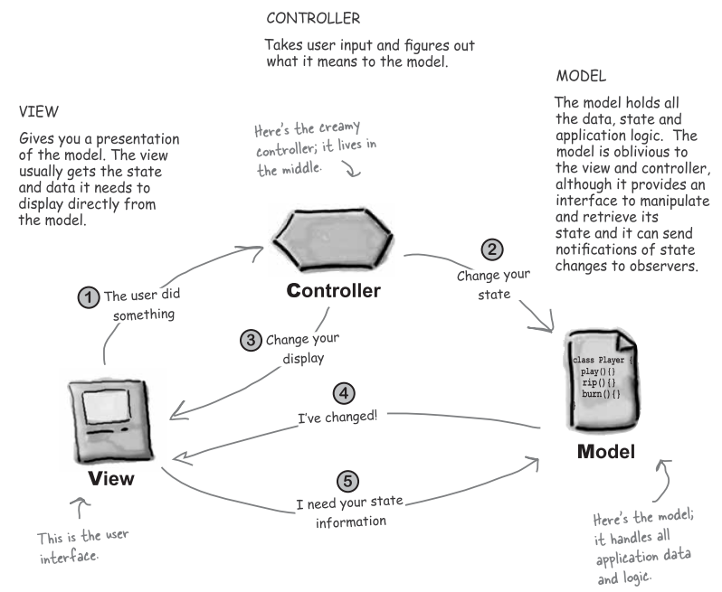
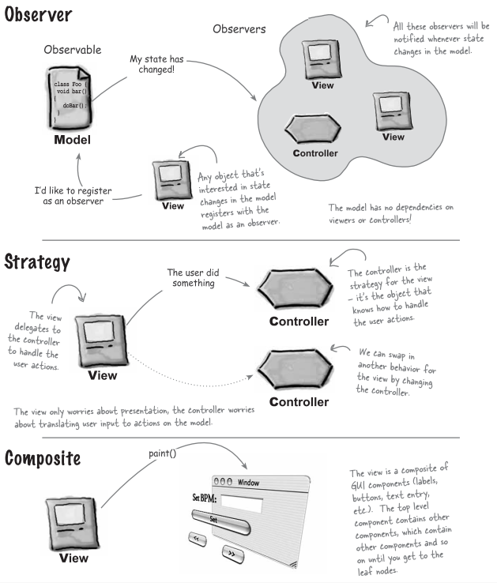

The Compound Patterns
A Compound Pattern combines two or more patterns into a solution that
solves a recurring or general problem.
Give a sight on MVC

Observer, Strategy and Composite

Bullet points
1. The Model View Controller Pattern(MVC) is a compound pattern consisting
of the Observer, Strategy and Composite patterns.
2. The model makes use of the Observer Pattern so that it can keep
observers updated yet stay decoupled from them.
3. The controller is a strategy for the view. The view can use different
implementations of the controller to get different behavior.
4. The view uses the Composite Pattern to implement the user interface,
which usually consists of nested components like panels, frames and buttons.
5. These patterns work together to decouple the three players in the MVC
model, which keeps designs clear and flexible.
6. The Adapter Pattern can be used to adapt a new model to an existing
view and controller.